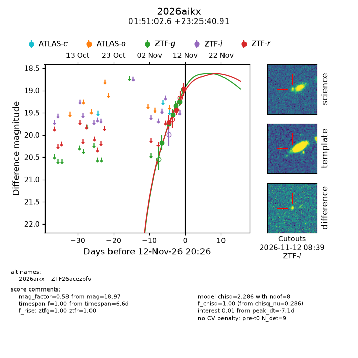
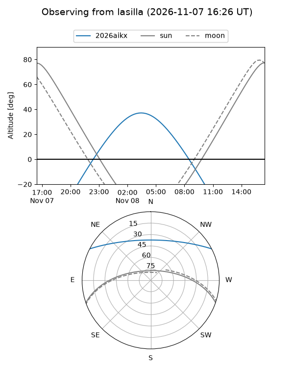
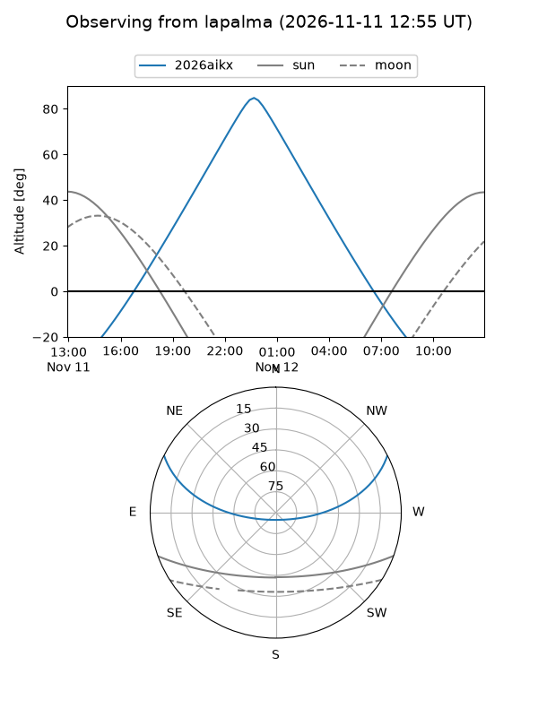
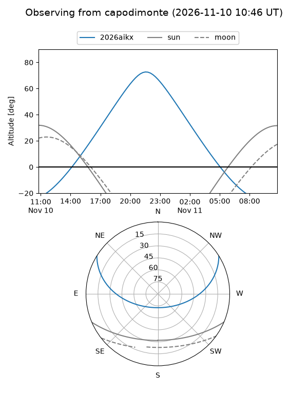
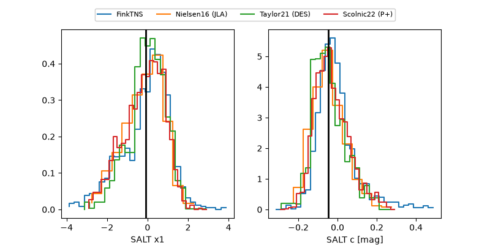

2026aikx
Target 2026aikx at 2026-11-12 20:27
Aliases and brokers:
FINK-ZTF: ztf.fink-portal.org/ZTF26acezpfv
Lasair-ZTF: lasair-ztf.lsst.ac.uk/objects/ZTF26acezpfv
ALeRCE-ZTF: alerce.online/object/ZTF26acezpfv
YSE-PZ: ziggy.ucolick.org/yse/transient_detail/2026aikx
TNS name: wis-tns.org/object/2026aikx
Direct TNS query: direct search
alt names
ZTF26acezpfv (ztf,fink_ztf)
2026aikx (tns,yse)
Coordinates:
equatorial (ra, dec) = 27.7608,+23.42803
equatorial (HMS+DMS) = 01:51:02.58,+23:25:40.91
galactic (l, b) = (140.2187,-37.43474)
Flags:
peak dt: -7.1
Photometry:
last ztfg=18.98, ztfr=18.97
6 ztfg, 3 ztfr detections
Lightcurve

Visibility



Additional plots
